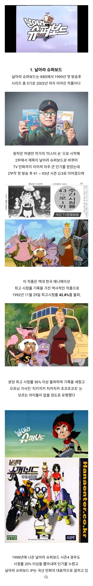

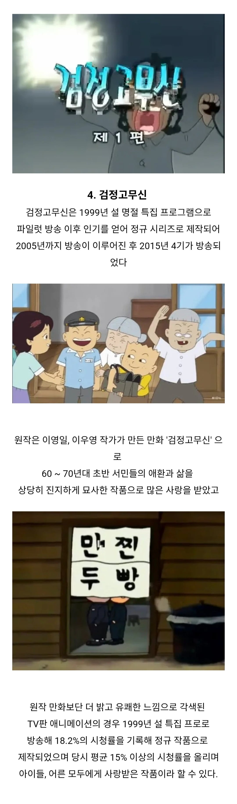


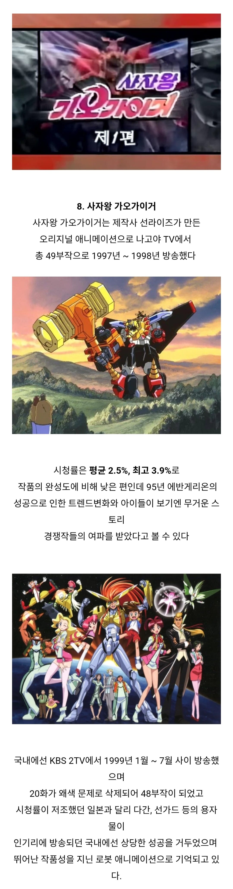


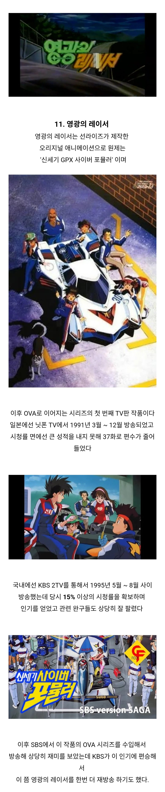


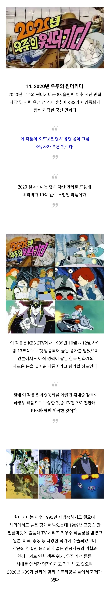


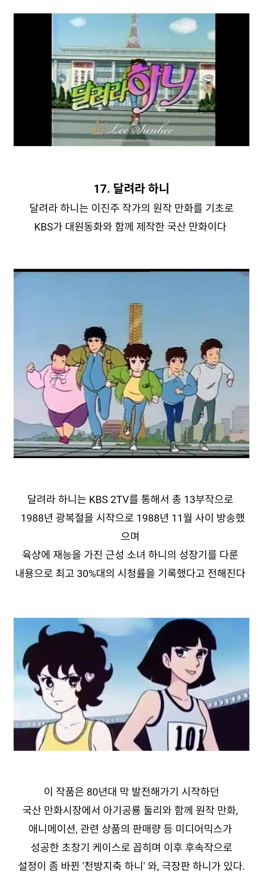
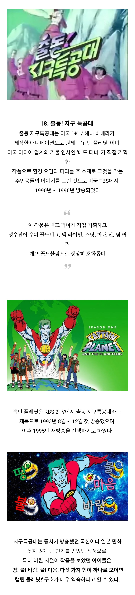
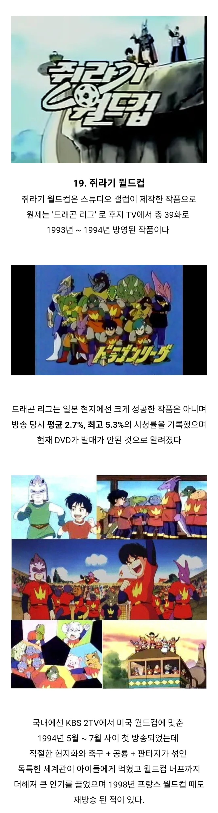
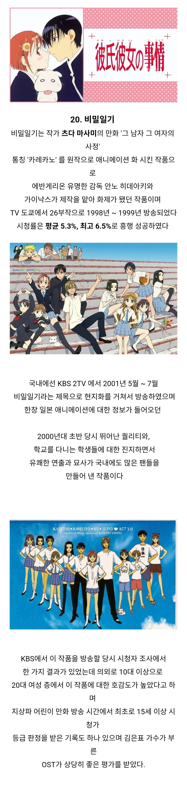


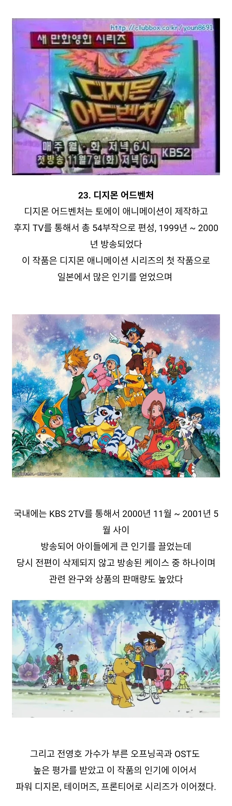

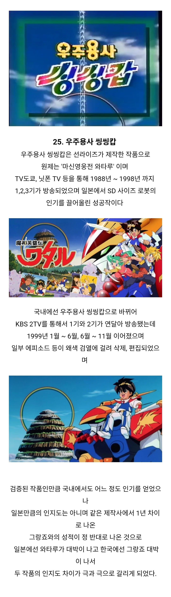
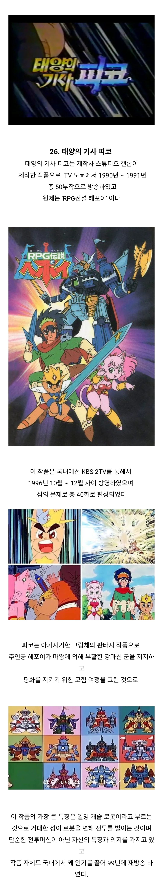
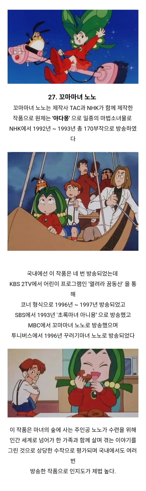
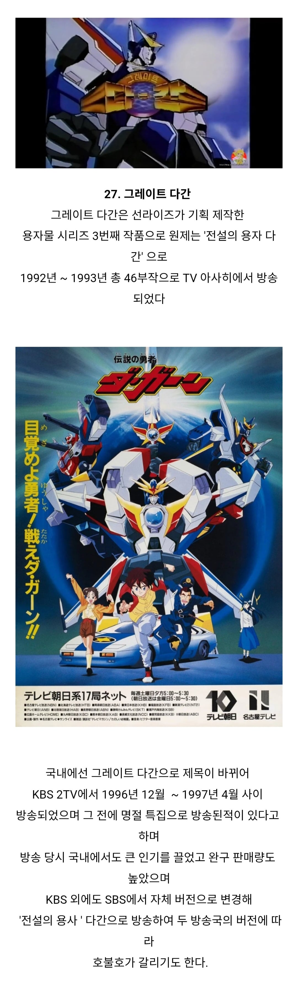
날아라 슈퍼보드
세일러문
베르사유의 장미
검정고무신
천사소녀 네티
꾸러기 수비대
요리왕 비룡
사자왕 가오가이거
지구용사 선가드
아벨 탐험대
신세기 사이버포뮬러(영광의 레이서)
은비까비의 옛날 옛적에
레스톨 특수구조대
2020년 우주의 원더키디
디즈니 만화동산
무적 파워 레인저
달려라 하니
출동! 지구 특공대
쥐라기 월드컵
그남자 그여자의 사정(비밀일기)
황금로봇 골드런
두치와 뿌꾸
디지몬 어드벤처
천하무적 슈라트
우주용사 씽씽캅
태양의 기사 피코
꼬마마녀 노노
그레이트 다간
출처 : https://m.fmkorea.com/index.php?mid=best&search_target=title_content&document_srl=10580040033&search_keyword=%EB%A7%8C%ED%99%94&listStyle=webzine&page=1
녹색전차 해모수 가져와잇